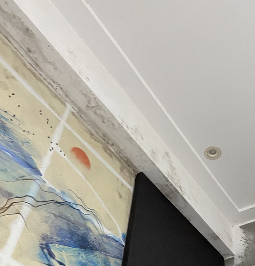

プロローグ
2023年の1月か2月
父
「そろそろ上海に行っとかないと（筆者の両親は上海人で、年一回は上海に行っていたが、コロナでしばらく行けてない）な。でも家族3人が一緒に行ける直行便がないな。深圳（香港の隣の都市）経由なら一人分だけとれるぞ。」
自分
「そうか。じゃあ今年も行けないね。」
父
「お前深圳に興味あるって前に言ってたよな？じゃあお前は一人で深圳経由で行け。ついでに広州（深圳の隣の都市）にも行ってこい。」
自分
「え」
そういうことで人生初の一人海外旅行が決まりました。厳密には2017年夏に上海に一人で行って（帰省）いるので初ではないんですが、その時はただの帰省なので、一人で海外を観光とかするのはこれが初です。主に言語面での不安があったので、正直不安がとんでもなかったです。深圳では父の学生時代の友人（以下、Wさん）の部下（以下、Cさん）という赤の他人が案内をすることになり、更に父の学生時代の友人達複数人での会食が自動的に設定されたのもあって、会話が下手な自分は不安が増大することに。
他の不安要素としては、中国では現金での決済がほとんど排除されていることが挙げられます。中国での決済手段はほとんどがWeChatPayやAliPayですが、実名認証が必要です。これだけなら問題はないですが、問題なのは、自分は中国籍にも関わらず中国での戸籍を持っていないので、中華人民共和国居民身分証（身份证）を持っていないことです。これは日本でいうマイナンバーカードに相当しますが、中国ではこれ一枚と中国の電話番号を持つ携帯電話一台でだいたいなんでもできる、というかこれがないとなんもできません。決済も高速鉄道も博物館等の入場もチケット購入もなんでも身分証が必要です。日本でWeChatPayを使おうとしたら、身分証で認証されていないから使えないというエラーが出ました。
そんなこんなで出発当日を迎えます。
1日目 東京→深圳
2023年7月31日。Cさんが深圳宝安空港まで迎えに来てくれるというので、遠目や人ごみの中でも見つけやすいように、彩度を極限まで高めたマゼンタの服と彩度を極限まで高めたシアンのキャリーバッグで出発するtsumu。
空港に着いてチェックインしたら、なんかビジネスクラスにアップグレードされた。
なお、当時の中国はコロナの対策として未だに出入国制限的なやつをやっており、出入国の際には自身の健康状況を申告し、QRコードを取得せねばならない（秋に撤廃）。健康状況含めて全て完全に自己申告で、公的な証明書の類は不要なので、実質的に形だけである。
最終目的地の上海に行くための中継地点に行くために最終目的地の上海上空を通過する皮肉
着陸して形だけのQRコードをかざして入国後、早速いつもの社会主义核心价值观が視界に入り、中国に来たことを実感する。Cさんと合流した後、タクシーで宿へ。タクシーの中でCさんと話してわかったことは、
こんな感じでお互いに趣味が合いそうな感じだったので、8月3日にブルーアーカイブ中国大陸版の配信が開始されることを伝えておいた。
宿に着いてチェックインを済ませた後、Wさんから連絡が来るまで待機。宿の詳細に関しては後述。その後はWさんとCさんと自分の3人で夕食をとり、老街を歩いて終了。無印良品とローソンを発見し、少しテンションが上がる。
宿について。チェックイン後、部屋を見たら、トイレットペーパーが切れかけている。壁や天井にシミが付いていたり、エアコンからカタカタと音が鳴っていたり、電動式蚊取り線香に耐性を持つでかい蚊が一匹だけ飛んでいたり、テレビのデッキが固定されずに薄型テレビの上に置かれていたり、フロントにトイレットペーパーの補充をお願いしたら、これを使えと言わんばかりにティッシュひと箱が置かれていたりと、皮肉なしに面白い宿だった。極めつけは、夜になると生活感あふれる話し声が聞こえること。深夜12時頃に「好！现在开始做饭了！！（よし！今から飯作るぞ！！）」とか聞こえてきた。改めて中国に来たことを実感。
面白いのはいいんだけど、寝てる間に蚊が休まずに攻撃を加えてきてかなり参った。10箇所くらい刺されたし、すごい腫れた。結局蚊を仕留めることはできずに無条件降伏。下の画像はその時のポケモンスリープ。
2日目 深圳
2日目もCさんが案内してくれた。Cさんに案内されて朝食（早茶）を済ませた後、深圳のデジタル街であるところの華強北（华强北）に行く。日本でいう秋葉原みたいなところ。元々深圳に興味があったのは、深圳がアジアのシリコンバレーと呼ばれているから。40年前まで漁村だった深圳が、1980年に経済特区に指定されてから、今では世界都市ランキングに乗るほどになったのはなんとも興味深い。
かのHUAWEIの直営店があったり、深圳のデジタル技術の歴史を扱った博物館があったりと、なかなかに面白かった。博物館では透明タッチパネルが使われていたり、天井や壁がなんかサイバーな感じになっていたりした。博物館は入場無料。でも例のごとく中国の電話番号が必要。Cさんの電話番号で事なきを得るが、広州ではどうしようと少し不安になる。
あと電子部品を扱う商店が集まる建物にも行った。

华强北の次は海上世界に行ったが、ここはそこそこ。深圳は歴史が浅いので、観光で遺跡や寺に行くような人はあんまり楽しめないかもしれない。
夜は最初の方で言った父の学生時代の友人複数人との会食。初対面にも関わらず、まるで旧知の仲かのように親しく接してくれて、中国人の人情を感じた。
この後すぐ近くのファミリーマートに行った時、日本のフィギュアが売っていてここでもテンションが上がる。


確かこの日に乗ったタクシーのどれかが红旗（中国の高級車ブランド。中国共産党の偉い人や習近平国家主席が乗っている車。）で少しうれしくなった。中国のタクシー事情には詳しくはないが、タクシーは毎回Cさんが携帯電話から呼び出して、指定されたナンバーの車に乗るという形式だった。車は毎回車種もバラバラで、タクシー会社のロゴらしきものもなかったので、いわゆるライドシェアというものだろう。当然ながら例のごとくこれを利用するにも中国の電話番号が必要らしい。コロナ前に中国に行っていた時と比べて随分と変わった。
3日目 深圳→広州
Cさんが朝食に广式早茶（広東式の朝のお茶）に連れて行ってくれた。そこで出された油条（揚げパン）を見て驚愕。とりあえず下の写真を見てほしい。


でかすぎる。断面積で言うと、上海の油条や池袋の友誼商店で手に入る油条の16倍くらいある。
朝食を済ませ、高速鉄道に乗るために深圳北駅へ。当然予約はしていない、というか出来ないので（理由は冒頭部分を参照）、窓口でチケットを買う必要がある。その時にも身份证を持っているかと尋ねられた。自分のような存在はこの国においては例外だ。
ここでCさんとはお別れ。ここから本当の一人旅が始まる。
70分間立ち乗り。列車はあまり揺れなかったのでそれほどの苦ではなかった。移動中にブルーアーカイブの2.5周年記念募集を100回まわし、100回中12人が星3という大勝利をしていい気分になっていると列車は広州東駅に着いた。
高速鉄道の改札を出て地下鉄に乗り換え。地下鉄の改札に入ろうとしたとき、3人くらいの警備員に呼び止められる。
警「欸。给我看你的身份证号码。（おいお前。身份证の番号を見せろ。）」
我「啊！？没有。我只有护照。（あ？ねえよ。パスポートしかない。）」
警「不是护照。身份证啊。你是中国人的话，就有身份证的吗？（パスポートじゃない。身份证だ。中国人なら身份证持ってるだろ？）」
我「没有。我是华侨。（ない。自分は華僑だ。）」
警「哦，你是华侨啊？那么，算了。走吧走吧。（あ、お前華僑なの？じゃあいいよ。行きな。）」
なんで呼び止められたのかは本当のところはわからない。多分高速鉄道の改札を出る時に中国のパスポートを使って出たからだと思う。ここでまた自分という存在がこの国では例外であることを思い知らされる。
地下鉄を乗り継いで宿に着く。もう周りの人間みんな広東語しか話してない。地下鉄の自動放送ですら広東語。何を言っているのか全く理解できない。今回の宿は深圳のみたいな面白さもなく、普通の宿。この時点で時刻は15:00。どこかの博物館や寺に行くには微妙な時間なので、広州塔という東京スカイツリーより少し低い電波塔に行くことにした。広州塔に行くために地下鉄に乗ろうとしたところで問題発生。荷物検査（中国の地下鉄は改札前に手荷物検査がある）に引っかかる。引っかかるようなものなんか持ってたかと思いつつ、検査官の話を聞くと、モバイルバッテリーが引っかかったとのこと。広州地下鉄に持ち込めるモバイルバッテリーの容量の規定は10000mAhまでであることをここで知る。自分のは23200mAhだったのでアウト。やむなく宿に引き返し、モバイルバッテリーを置いて行くと、今度は何も問題なく通れた。飛行機にも持ち込めるモバイルバッテリーを地下鉄に持ち込めないとは……。上海にも深圳にもこんな規則はないので、何とかしてほしいところだ。
着いた。人があまりにも多いので登ることはしなかった。中国のこういう人が集まる観光地の名物、路上で変な玩具を売っている人がたくさん。みんな揃いも揃って虹色に光る広州塔の模型を売っていた。ちょっと欲しいかもしれないと思ってしまったのはここだけの秘密やで。武装警察が見張ってるところでこういう路上商売をするのも中国らしい光景。虹色に光る広州塔は買わなかったけど、広州塔の写真のルービックキューブは買った。

夕食は屋台飯のビーフン。中国に来たら屋台飯は外せない。なんで屋台飯って美味いんだろうね。ちなみに屋台飯の衛生状態はお察しなので、腹の具合には注意する必要がある。衛生状態のいい場所で育ったならばなおのこと。自分もこの時少し不安になったが、腹を下したりはしなかったのでよし。お察しな衛生状態の寿司の屋台を見つけて絶句した。現地の人間は普通にその寿司をモリモリ食ってたので、慣れているのだろう。炒飯や羊肉串ならともかく、寿司は慣れてない人は絶対に手を出してはならない。
4日目 広州
予定は未定。広州出身のCさん（深圳で案内してくれたCさん）に教えてもらった観光マップを参考に行く場所を決める。どこかに行ったら必ず博物館に行く人間なので、広東省博物館に行くことにした。更に広州の仏教は歴史が長いらしいので、Cさんに教えてもらった光孝寺と六榕寺にも行くことにした。どれもお互いに近い場所にあるのもいい。
地下鉄に乗って博物館に向かっていると、途中で南越王博物馆という、見るからに面白そうな博物館に遭遇。南越というのは紀元前の漢の時代に広州（当時の名前では番禺）を首都にしていた王国。後に漢に滅ぼされた。こんな面白そうなものを無視するわけにもいかず、入ってみることに。入るときにまた電話番号関連でちょっとした面倒ごとがあった。電話番号があればWeChatでQRコードを読み込むだけで入れるが、自分にはないので、端っこにあるやる気がなさそうな受付でチケットを発行してもらった。ちなみに中国の博物館は基本無料。この博物館も無料だった。2時間くらいで見終わるだろうとか思ってたら、想像以上の量だった。ちゃんと見るなら丸一日はかかる。こんなのが無料でいいのか。
余りにも当然のように大中華が主張されてて笑った
腹が減ったので北京路で店を探し、よさげな店を見つけた。中国には「食在广州（食は広州にあり）」という言葉があるそうな。これがその時の写真。メニューの写真も載せておこう。


この店ですこし珍しい出来事を見れた。この旅初めての現金決済の現場を目撃した。近くの席に座っていた、広東語を話すおばさんが、コード決済のやり方がわからないので現金で払わせてほしいと店員に言うのだ。店員側も現金決済に少し手間取り、わざわざ裏から現金を持ってきて対応するという状況。本当に現金決済は排除されているのだと実感した。確かにこの国で決済する時、店員側も客側も何も言わず、言わなくてもわかるだろ、と言わんばかりに読み取り機にかざしている。便利なはずなのに不便なこの感じ。
歩いて六榕寺に行く。広州というと、摩天楼の写真ばかりが目立つが、大通りを裏に入ると生活感あふれる町が広がっている。上裸のおじさん複数人が道端で麻雀を打っていたりする。六榕寺はそんな町の中にある。ここにきて初めて、この旅初の外国人観光客と遭遇する。外交関係とか電話番号とか身份证とかが原因で、外国人観光客が少ないのだ。

八角形の塔が印象的
六榕寺から少し歩いて光孝寺。入場にチケットが必要とのことで、いつも通りパスポートを提示したら「それはいらん」とのこと。ここでは身分を明かす必要がないらしい。でも入場料5元は取られた。

全国重要文物保護単位に指定されているそうだが、それよりもここで突然広東語しか話せないおじさんに話しかけられたことが強く印象に残っている。広東語はわからないので、その旨を伝えたら普通話を話し出したが、それも強い広東語訛りかつところどころに広東語の単語が混ざっているので、殆ど何を言っているのかわからなかった。「自分は昔からここに住んでいて、昔はこの先に抜け道があった。」ということを言っているのはわかった。
良い時間なので宿に戻ろうと地下鉄の駅に行くと、动漫星城、日本語でいうとアニメスターシティなるものが目に入った。そういえばCさんがくれた観光マップにも書いてあった。見てみるとアニメイトがあった。他にも見覚えのあるものやコスプレ衣装がたくさん売られていた。このエリア全てが日本語で埋め尽くされており、テンションめっちゃ上がった。コスプレをしている人も何人かおり、見覚えのある原神のコスプレもいた。アズールレーンのフィギュアが売られてるけど、アズールレーンって中国で規制されてなかったっけ？


JK LOLITA 汉服（迫真）
5日目 広州→上海
沖縄付近に居座っていた台風も一瞬だけ動き、沖縄在住の姉は無事に上海に行けることになった。自分は午後の便で夜に上海に着く予定だが、昼に内定先の懇親会があるので、もう朝から空港に向かうことにした。広州地下鉄のモバイルバッテリーの規定で地下鉄は使えないので、やむなく金を払ってタクシーに乗ることに。料金は244.11元（約4800円）と、案の定ぼったくられた。地下鉄を使えば8元（約160円）で済んだのに。タクシーで向かってる間もわざと遠回りしてたの気付いてたからな。運転手にどこから来たのか尋ねられ、東京から来たと言ったら中国語うまいな、とここで初めて言われた。空港ロビーで懇親会を終わらせチェックイン。まさか人生初のA350が中国国内線になるとは思わなかった。やはりA350は美しい。
夜に上海到着、そのまま親戚の家に合流し、人生初の一人海外旅行は無事に終了。
最後まで読んでいただきありがとうございます。最後に広州→上海の機内、福州上空で撮れた写真でこの記事を終わります。

参考文献
更新履歴
- 2023/12/2
- 一部修正
- 2023/12/1
- 一部修正
- 2023/11/30
- 一部修正
- 2023/11/27
- 記事作成